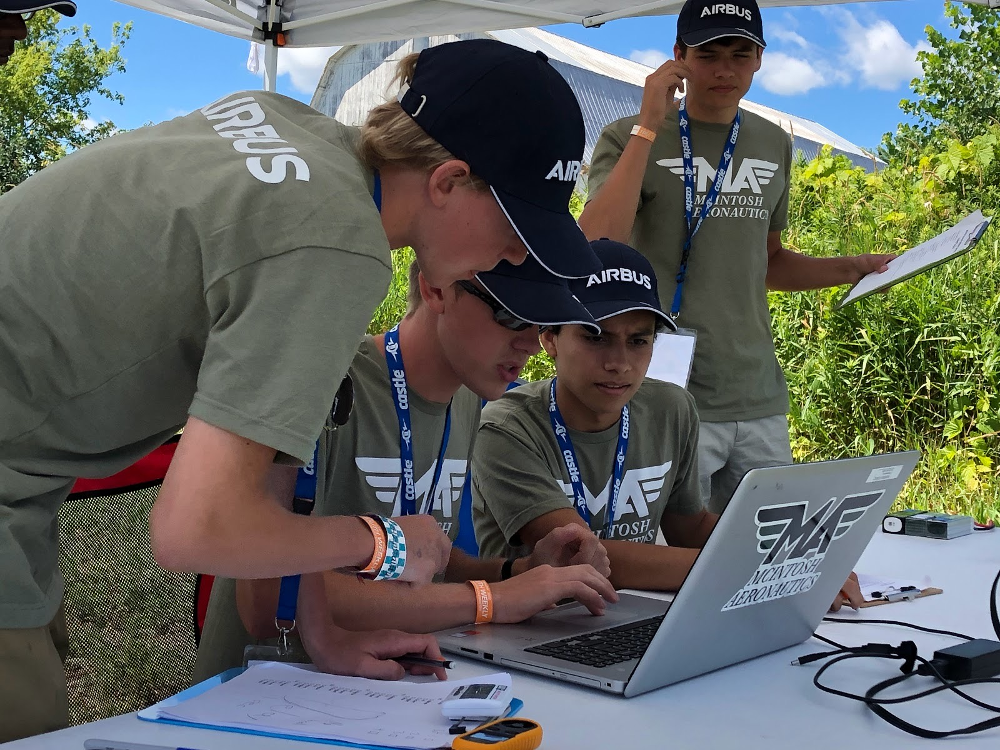

Problem solving is my passion.
Puzzles have always facinated me. Whether they be in coding, board games, school, or daily life, I've always had a burning desire to solve them. That's why, in 7th grade, I decided to create my first invention, solving a problem that had been bugging my brother and I while we built RC planes. From that moment on, I was hooked. Not a year since has gone by in which I haven't tackled an issue in robotics, medical devices, pet feeding, or IoT technologies. Across a wide range of fields and using a wide range of skills, I'm constantly looking to learn and refine my abilities to better tackle the next issue.
My design philosophy
There are many people with decades of experience in coding, theory, and other technical skills. That's why I don't try and compete - I simplify. Maybe the solution to a tough problem isn't to throw more coding expertise at it or to make devices even more invasive. Maybe, the solution is in tackling not the symptoms but the core issue at hand - a common theme throughout my inventions. Each one is a powerful but simple solution to complex problems, allowing for the greatest user experience while not decreasing the functionality of a product.

My learnings
The real learning in all of my projects wasn't how to perform a specific task or use an application/library. My true learning was in how to learn. How do I tackle problems more efficiently? How can I take my mistakes and apply them to find a solution more quickly? How do I know where I've failed? Here are a few takeaways of mine.
1. Tackle the core problem.
I love to rush in and make a solution - but this boxes me in, closes paths I should have taken by solidifying my mindset before I had all the facts. I flawed mental model has wasted countless hours for me as I solve for the wrong problems
2. Get feedback
This may seem like an obvious one. It's too easy, however, to be so convinced that the product will be perfect just the way you imagine it that you disregard the wealth of information surrounding you. I'vev learned to reach out to my target market, to speak with professionals on the other end. I was always nervous presenting to them - would they expose my product as a fraud? Sure, maybe it was - but each time I left a discussion, it became less and less of a fraud and more of a real product. Be confident enough to believe in the core of your idea but huble enough to accept the advice of those more experienced than you.
3. Fail early, fail often, but always fail forward
This isn't an original one - in fact, it's a quote from John Maxwell. However, there is so much to learn from it, encompassing the each of my previous learnings. It's not a quote about being reckless or even about being prepared to fail. It's about taking a mindset that each step you take may be wrong and that you should be ready to challenge yourself at every corner. Does this solve the true, fundamental problem? Can I test that in a meaningful way? What do the experts think? This point is about accepting that you shouldn't invest so much of your belief into one mental model without evidence that you are on the right track.